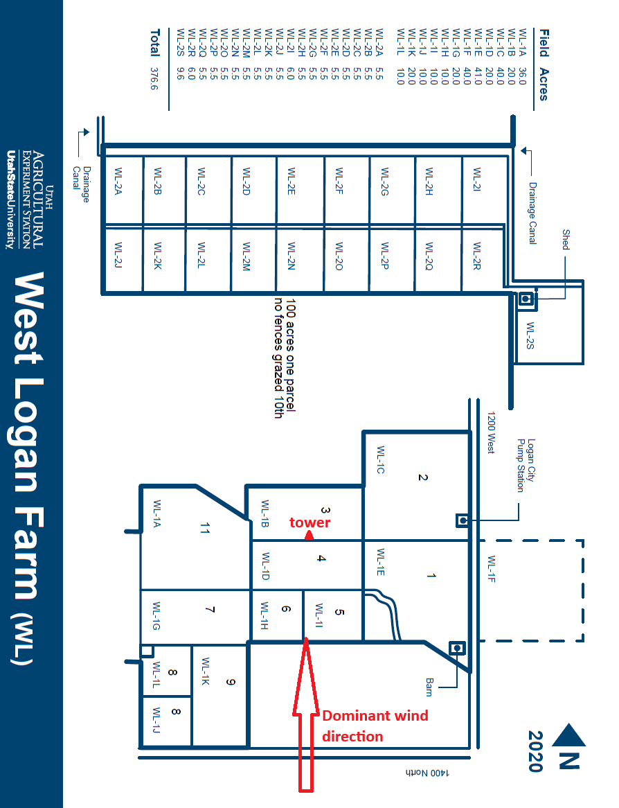
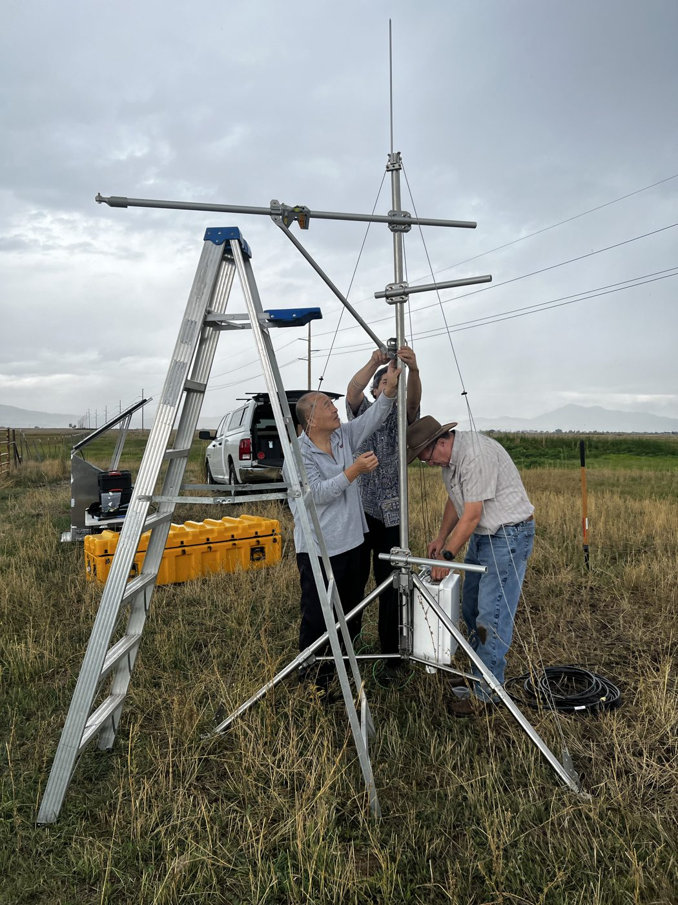
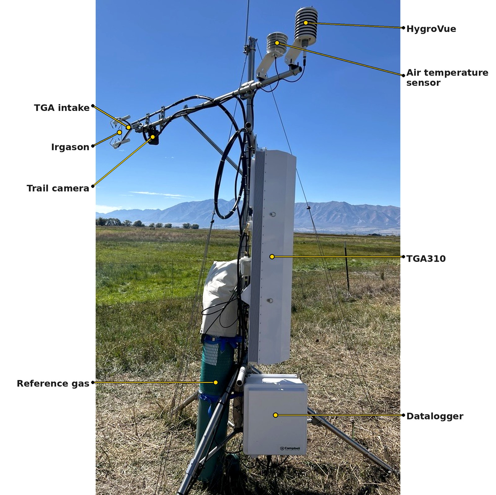
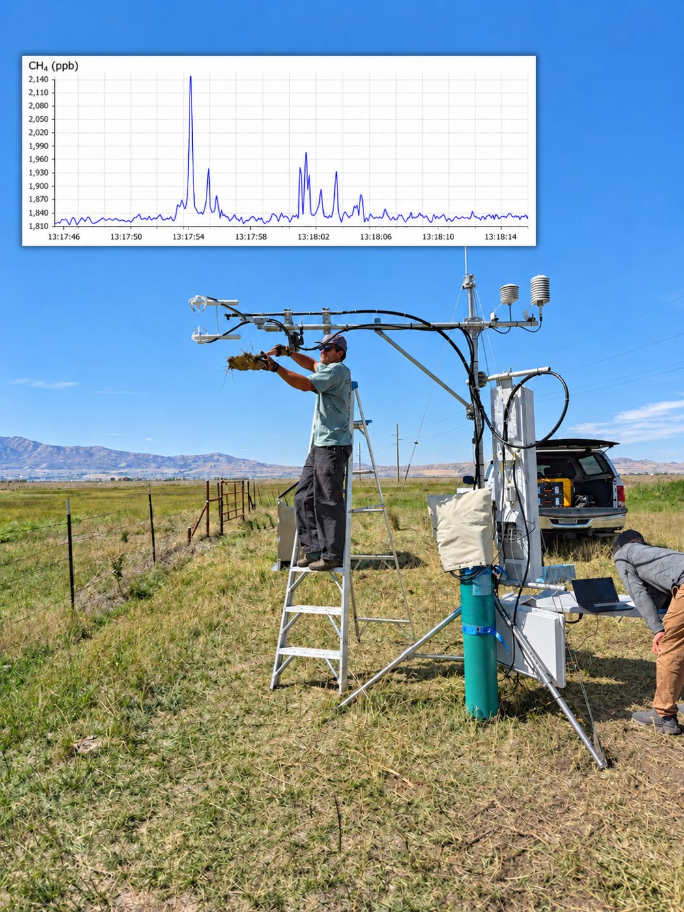
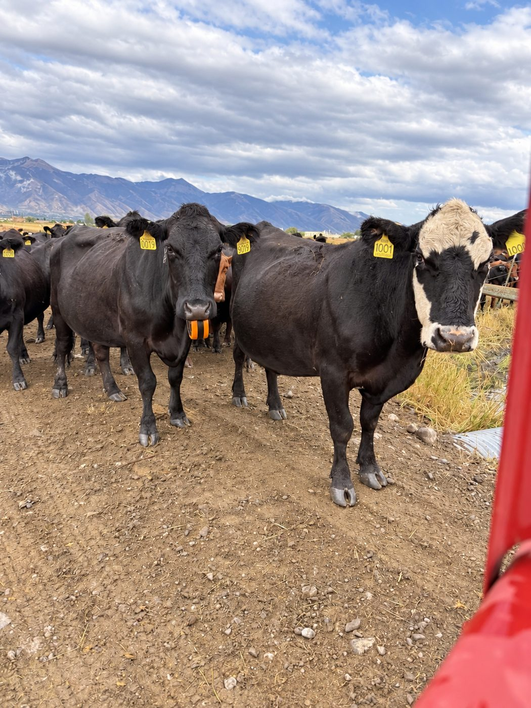
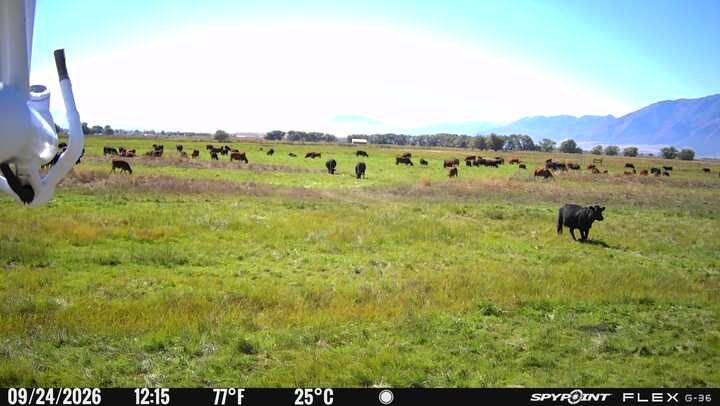
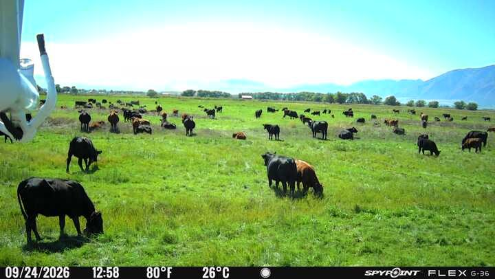

Eddy covariance (EC) station measuring methane (CH4), CO2, water vapor and energy fluxes from grazing cattle at the Utah State University West Logan Farm (WL), Logan, Utah. Methane is measured with a Campbell Scientific TGA310 trace gas analyzer; fluxes are computed on the datalogger and reported every 30 minutes in the CSFlux table.

Field layout of the USU West Logan Farm. The tower (red triangle) sits between fields WL-1B and WL-1D. The red arrow marks the dominant wind direction, which carries air from the grazed fields to the tower so the flux footprint covers the pasture.

Setting up the tripod tower and mast. The long crossarm holds the sonic anemometer and gas sample inlet; the lower short arms hold the TGA, with the datalogger enclosure mounted near the base.

The finished station with its main components labeled: IRGASON and TGA intake on the boom, trail camera, air temperature sensor and HygroVue, the TGA310 trace gas analyzer, reference gas cylinder, and datalogger enclosure.

The top plot shows high-frequency CH4 concentration: short spikes from about 1,810 to over 2,100 ppb when fresh cow manure was brought closer to the inlet.


The tower trail camera documents when and where animals are grazing in the footprint, which helps interpret changes in the measured CH4 flux.

About 45 minutes later, cattle have moved closer to the tower. Animal position relative to the footprint strongly affects the CH4 flux the tower sees.